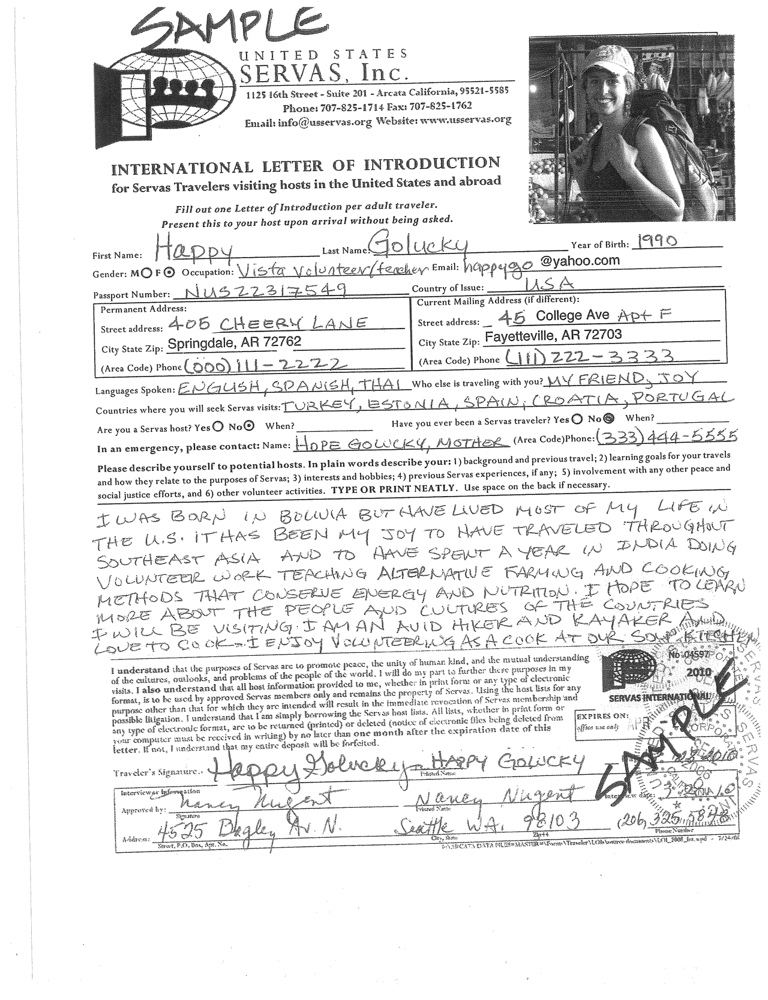

*For Interviewer's use ONLY
Here are the people awaiting interviwers:
Walter Parsons

THIS IS A CHECKLIST OF WHAT I SHOULD DO DURING THIS INTERVIEW:
Prior to the Interview Traveler has reviewed Traveler and Host Responsibilities
All Travelers present at Interview Appointment?
Sent draft of Letter of Introduction and two letters of recommendation
During the Interview How did you find out about US Servas?
USServas Outreach
Told by current Servas Member
Through a Friend
Online
Brief review history of Servas
Reviewed Purpose and length of trip. As well as places they will visit.
Suggested additions or deletions from Draft LOI
Reviewed Traveler Responsibilities, and asked for questions.
Reiterated basic rules; Two night stay, respect host requests, keep in touch to arrange arrival and departure times, etc.
Make sure Host Lists are returned within the span of Membership.
Did they plan their trip in advance? Suggested using WMT hosts, hosts outside of cities and day hosts.
Personalized request to perspective host, sent LOI by e-mail or mail.
Discussed and shared peace activity involvement in your communities.
Recommended time between stays.
Remind to hand LOI to host at door before being asked.
Explained Travelers Report, send back to office. Thank you notes!
Suggested becoming a day or regular host with Domestic travel privileges.
Encouraged involvement in local Servas potluck meetings, and to bring traveling friends.
Reminded new member that as they represent US Servas, at the bottom of the LOI has information for the host to lodge a complaint if necessary.
Recommendations, Traveler Membership Fee, Deposit for Host List, Shipping & Handling
I approve of this person as a Servas traveler.
After clicking on the checkbox, a drawing box will appear to get the interviewers signature.
This page is for Interviewer use, not for new traveler use.
Once an Interviewer approves of this person as a Servas Traveler you will recieve a confirmation.
On clicking the PERSON WHO CLICKED link, they will be presented with that person's current information,
removing the need to present an LOI.